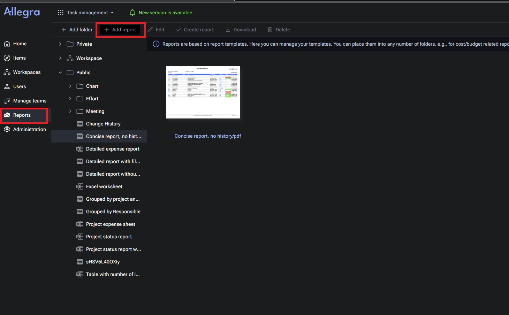
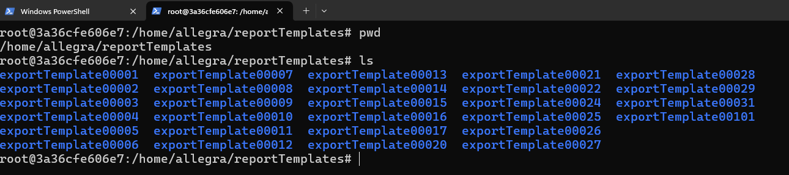
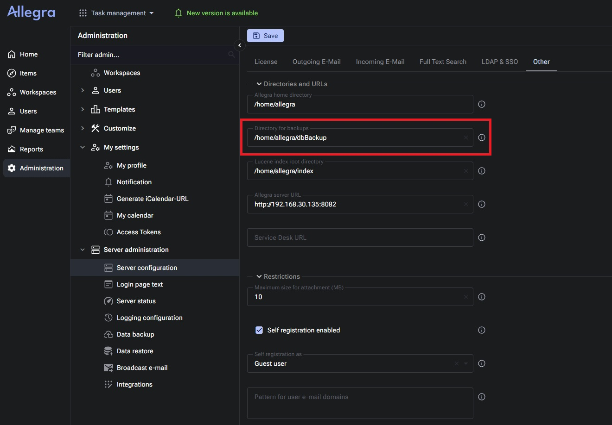
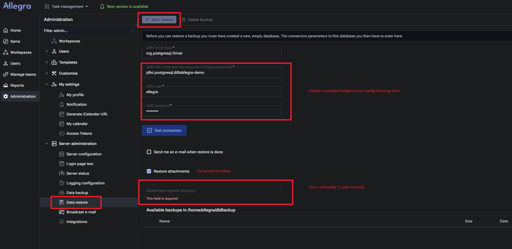

CVE-2025-xxxx: Remote Code Execution In TrackPlus Allegra
CVE Information
CVE ID: CVE-2025-xxxx
Severity: HIGH
CVSS Score: 7.2
Affected Product: TrackPlus Allegra
Vulnerability Type: Remote Code Execution
Discovery Date: September 2025
Executive Summary
A critical Remote Code Execution (RCE) vulnerability was identified in TrackPlus Allegra version 8.1.6. The flaw allows an authenticated administrator to place a web shell on the underlying server, resulting in full command execution under the application context.
Technical Details
The vulnerability resides in the application's Backup Restore mechanism. Due to an insecure design, the application permits administrators to restore attachments to an arbitrary, administrator-configurable filesystem location. That restore path is susceptible to path traversal, allowing an attacker to write files (for example, a web shell) into the application's web root.
Vulnerability Analysis
TrackPlus Allegra is a project-management application that supports reports containing attachments. Report packages are zip archives that must include a required description.xml file; uploaded report zips are extracted into a per-report folder under /home/allegra/reportTemplates/exportTemplate00XXX, where XXX is a numerical identifier incremented per report.


The restore functionality accepts backup zip files from a configurable backup directory (default: /home/allegra/dbBackup). An administrator may change this backup directory via server configuration. If a crafted backup archive is placed into any directory that the administrator configures as the backup directory, it appears in the restore UI. When the restore operation writes attachments, the configured restore-destination path is used without sufficient validation, enabling path traversal.


An attacker can:
- create a malicious backup archive containing a web shell;
- place that archive under a report exportTemplate folder by uploading a specially-crafted report zip (report upload extracts into
/home/allegra/reportTemplates/exportTemplate00XXXand returns the numeric ID); - change the application's backup directory to the matching
exportTemplate00XXXfolder; - invoke the restore workflow with the Restore attachments option enabled and set the attachment restore location to a path such as
../../../../../../../../../../../../../../../usr/local/tomcat/webapps/demo/js/; - the restore process then writes the web shell into the web root, leading to RCE via HTTP requests to the shell.
Exploitation Walkthrough (high level)
To avoid intermediate unzip/rejection checks, the exploit uses a double-zipping approach: build the malicious backup zip (first layer), then place it inside a second zip that also contains the mandatory
description.xml (second layer). Upload the second-layer zip using the report upload feature so it lands in
/home/allegra/reportTemplates/exportTemplate00XXX and note the returned ID. Reconfigure the backup directory to that exportTemplate path, then run the restore operation selecting the uploaded backup and specifying the path traversal location for attachments.
After restore completes, a web shell is present in the application web root and can be invoked to execute commands.
Alternateive Approach
There exist an api which can take any file and uploads it to the /home/allegra/reportTemplates/ folder
So instead of going through the entire process of building the reports package we can also use this api and change the backup location accordingly
However we figured this part after our submission and hence the exploit demonstrates the path that involves the report upload
Proof of Concept
The PoC automates:
- construction of the malicious inner backup zip (containing the web shell);
- wrapping the inner zip with the required
description.xmlinto an outer report zip; - uploading the outer zip via the reports feature (to obtain the
XXXID); - reconfiguring the backup directory to the corresponding
exportTemplate00XXXfolder;
All we should do is configure a remote Postgres Database start the restore operations.
When executed, the process results in a web shell under /usr/local/tomcat/webapps/demo/js/,
enabling remote command execution via HTTP.
The exploit POC can can be found at : POC.py
Affected Versions
This vulnerability affects TrackPlus Allegra versions ≤ 8.1.6. Organizations using affected versions should immediately apply security patches.
Timeline
- Discovery: September 2025
- Vendor Notification: September 2025
- Fix Released October 2025
- CVE Assignment: October 2025
References
This research was conducted by the ZDaylabs security team as part of our ongoing commitment to improving application security.